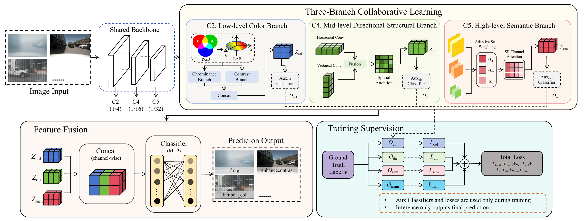
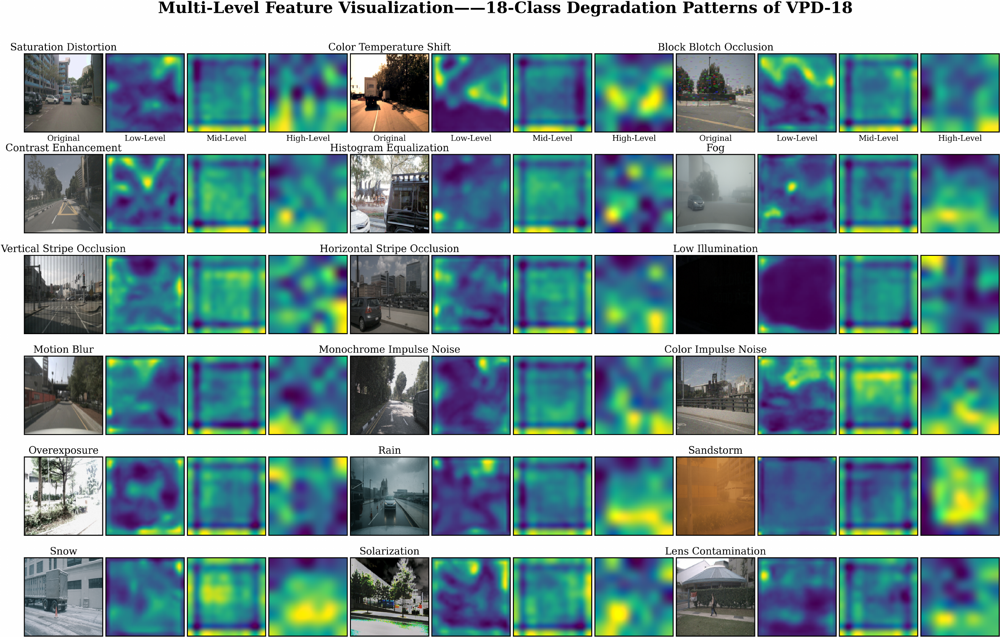

Color & contrast
Explicit LAB features capture chrominance, illumination, and local contrast variations.
AUTONOMOUS DRIVING · VISUAL PERCEPTION
for Visual Perception System in Autonomous Driving
Understanding how visual perception degrades.
A shared backbone. Three complementary representations.
THE RESEARCH QUESTION
Visual inputs in autonomous driving can be affected by hardware faults, hardware degradation, software faults, and environmental interference. Identifying the specific degradation pattern provides more detailed information than a normal-or-abnormal decision.
PDP-Net jointly models color and contrast, directional structure, and global semantics to distinguish degradation patterns whose discriminative cues emerge at different representation levels.
01 / METHOD

Explicit LAB features capture chrominance, illumination, and local contrast variations.
Horizontal and vertical convolutions with spatial attention capture directional artifacts and structural abnormalities.
Adaptive multi-scale modeling captures visibility degradation and reduced semantic discriminability.
02 / VPD-18 DATASET
18 patterns across six groups, from color shifts and sensor artifacts to challenging weather. Dataset statistics follow Table I of the paper.

03 / EXPERIMENTS
Selected comparisons on VPD-18 from Table II of the paper. All values below are paper-reported results.
| Method | Accuracy (%) | F1 (%) | Precision (%) | Recall (%) |
|---|---|---|---|---|
| ResNet-50 | 94.80 | 94.78 | 96.20 | 95.10 |
| MobileNetV3 | 95.84 | 95.88 | 96.12 | 95.85 |
| ViT-Small | 96.32 | 96.23 | 96.77 | 96.27 |
| EfficientNet-B0 | 96.73 | 96.74 | 96.73 | 96.53 |
| AlexNet | 96.81 | 95.73 | 97.10 | 96.75 |
| Swin-T | 97.39 | 97.39 | 97.24 | 97.20 |
| CoAtNet-0 | 97.51 | 97.51 | 97.45 | 97.35 |
| PDP-Net Ours | 98.46 | 97.87 | 98.10 | 97.81 |
ResNet-50 backbone · 56.04 M parameters · 16.18 G FLOPs · 244.79 FPS on NVIDIA RTX 4090D, under the paper's measurement setting.
04 / EXPLORE THE WORK